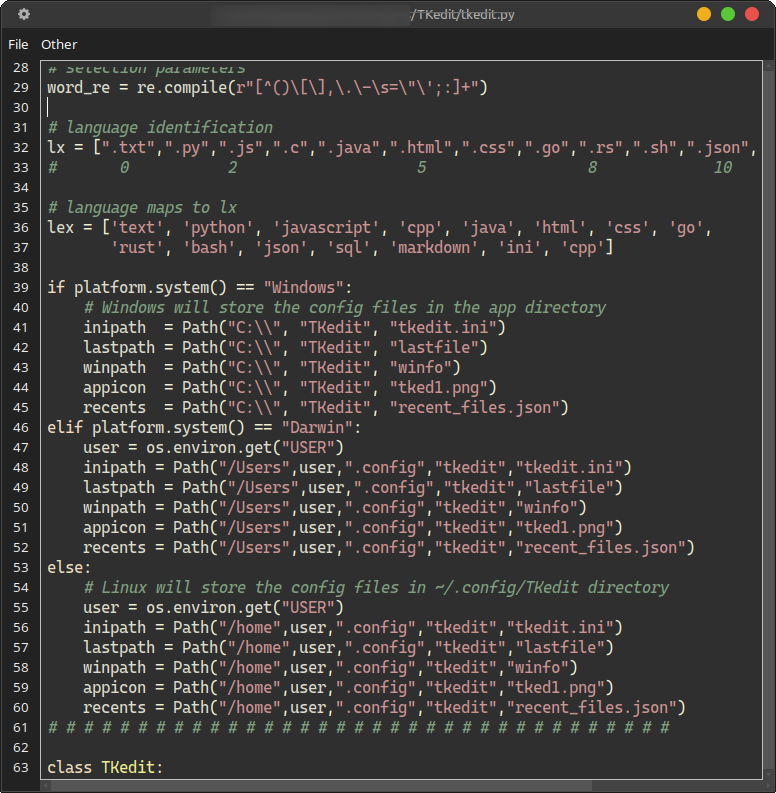

tkinter Text is not the swiftest widget in the class but still packs a byte.
File: tkedit.ini
[Main]
font=Cascadia Code
fontsize=10
lastfile=yes
backup=no
tabsz=4
nospaces=yes
terminal=xfce4-terminal
filemgr=thunar
appath=home/USER/apps/python/projects/TKedit/tkedit.pyc
autoindent=yes
md2html=yes
debounce=100
theme=cyborg
style=material
Config files:
lastfile
recent_files.json
tked1.png
tkedit.ini
winfo
For Windows, these files remain in the app directory (C:\TKedit)
For Linux and Mac these files are kept in ~/home/USER/.config/tkedit
some configuration values may differ for Windows.
terminal=wt
appath=C:\\TKedit
and possibly others
see win_tkedit.ini and Mac_tkedit.ini for examples
| Style Name | Description |
|---|---|
| DARK | |
material |
Based on Material Design |
dracula |
Purple/pink tones popular vampire-themed |
zenburn |
Low-contrast easy on the eyes |
monokai |
Classic dark theme from Sublime Text |
default |
Dark or Light |
paraiso-dark |
Paraiso Dark editor-style |
solarized-dark |
Popular low-contrast dark theme |
native |
Pygments own dark theme |
gruvbox-dark |
Retro groove warm colors |
| LIGHT | |
default |
Dark or Light |
borland |
classic light/bright editor look |
bw |
black/white / high readability |
tango |
lighter Tango palette |
pastie |
often used as a light-ish palette |
Dark
darkly cyborg superhero solar
Light
sandstone yeti pulse cosmo flatly litera minty
lumen journal simplex cerculean
favorites: cyborg / material and zenburn
| Special Keys | Description |
|---|---|
| ------------------- | ------------------ |
| Control-n | New File |
| Control-Shift-N | Open File in New Window |
| Control-o | Open File |
| Control-p | Open Previous File |
| Control-Shift-O | Open Recent File List |
| Control-s | Save File |
| Control-Shift-S | Save-As File |
| Control-q | Close App |
| Control-f | Find Text |
| F3 | Find Next Text |
| Control-h | Find - Replace Dialog |
| Control-u | Uppercase |
| Control-l | Lowercase |
| Control-w | Toggle Word wrap |
| Control-Shift-T | Open Terminal |
| Control-Shift-F | Open File Manager |
| Alt-z | Snippets Manager |
| Control-Slash | Line Comment |
and others ...
ctl-End
ctl-Home
ctl ->
ctl <-
ctl-k
ctl-a
shft-End
shft-Home
shft-ctl ->
shft-ctl <-
shft ->
shft <-
shft up-arrow/down-arrow
shft-ctl up-arrow/down-arrow
| Keyboard | Description |
|---|---|
| --------------- | ---------------- |
| Control-Left-Click | Toggle Bookmark |
| Control-b | Goto Next Bookmark |
| Shift-Control-b | Clear Bookmarks |
nospace = yes - will not remove trailing spaces for .md files.PYTHONPATH=your-python-modules-directory
